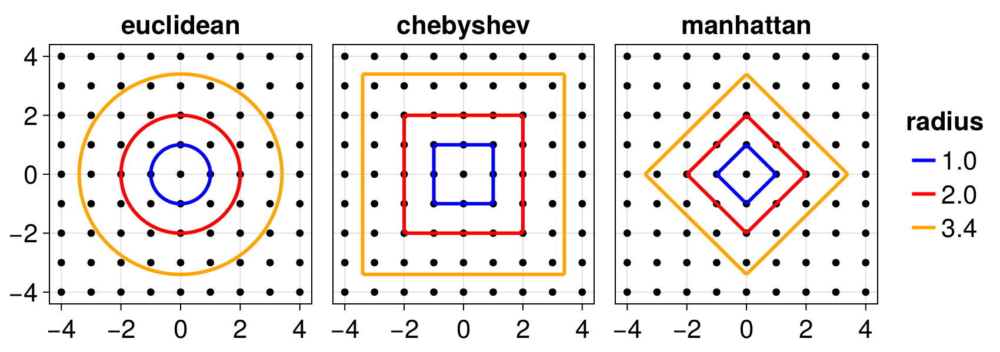

API
The API of Agents.jl is defined on top of the fundamental structures AgentBasedModel, Space, AbstractAgent which are described in the Tutorial page. In this page we list the remaining API functions, which constitute the bulk of Agents.jl functionality.
AgentBasedModel
Agents.AgentBasedModel — TypeAgentBasedModelAgentBasedModel is the abstract supertype encompassing models in Agents.jl. All models are some concrete implementation of AgentBasedModel and follow its interface (see below). ABM is an alias to AgentBasedModel.
Available concrete implementations
It is also straightforward to create your own versions of AgentBasedModel, see the corresponding entry in the developer documentation.
Interface of AgentBasedModel
model[id]returns the agent with givenid.abmproperties(model)returns thepropertiescontainer storing model-level properties.model.property: If the modelpropertiesis a dictionary with key typeSymbol, or if it is a composite type (struct), then the syntaxmodel.propertywill return the model property with key:property.abmtime(model)will return the current time of the model. All models start from time 0 and time is incremented as the model isstep!-ped.abmrng(model)will return the random number generator of the model. It is strongly recommended to giveabmrng(model)to all calls torandand similar functions, so that reproducibility can be established in your modelling workflow.allids(model)/allagents(model)returns an iterator over all IDs/agents in the model.hasid(model, id)returnstrueif the model has an agent with givenid.
AgentBasedModel defines an extendable interface composed of the above syntax as well as a few more additional functions described in the Developer's Docs. Following this interface you can implement new variants of an AgentBasedModel. The interface allows instances of AgentBasedModel to be used with any of the API. For example, functions such as random_agent, move_agent! or add_agent do not need to be implemented manually but work out of the box provided the AgentBasedModel interface is followed.
Agents.StandardABM — TypeStandardABM <: AgentBasedModelA concrete implementation of an AgentBasedModel, which is also the most commonly used in agent based modelling studies. It operates in discrete time. As input, it requires at least one, or at most two functions: an agent stepping function and a model stepping function. At each discrete step of the simulation, the agent stepping function is applied once to all scheduled agents, and the model stepping function is applied once to the model.
See also EventQueueABM for a continuous time variant.
To construct a StandardABM use the syntax:
StandardABM(AgentType(s) [, space]; properties, agent_step!, model_step!, kwargs...)The model expects agents of type AgentType(s) living in the given space. AgentType(s) is the result of @agent, @multiagent or a Union of agent types.
space is a subtype of AbstractSpace, see Space for all available spaces. If it is omitted then all agents are virtually in one position and there is no spatial structure. Spaces are mutable objects and are not designed to be shared between models. Create a fresh instance of a space with the same properties if you need to do this.
The evolution rules are functions given to the keywords agent_step!, model_step!.
Keywords
agent_step!: the optional agent stepping function that must be in the formagent_step!(agent, model)and is called for each scheduledagent.model_step!: the optional model stepping function that must be in the formmodel_step!(model). At least one ofagent_step!ormodel_step!must be given. For complicated models, it could be more suitable to use onlymodel_step!to evolve the model, see below the "advanced stepping" example.container = Dict: the type of container the agents are stored at. UseVectorif no agents are removed during the simulation. This allows storing agents more efficiently, yielding faster retrieval and iteration over agents. UseDictif agents are expected to be removed during the simulation.properties = nothing: additional model-level properties that the user may include in the model.propertiescan be an arbitrary container of data, however it is most typically aDictwithSymbolkeys, or a composite type (struct).scheduler = Schedulers.fastest: is the scheduler that decides the (default) activation order of the agents. See the scheduler API for more options. By default all agents are activated once per step in the fastest sequence possible.scheduleris completely ignored if noagent_step!function is given, as it is assumed that in this case the user takes control of scheduling, e.g., as in the "advanced stepping" example below.rng = Random.default_rng(): the random number generator stored and used by the model in all calls to random functions. Accepts any subtype ofAbstractRNG.agents_first::Bool = true: whether to schedule and activate agents first and then call themodel_step!function, or vice versa. Ignored if noagent_step!is given.warn=true: some type tests forAgentType(s)are done, and by default warnings are thrown when appropriate.
Advanced stepping
Some advanced models may require special handling for scheduling, or may need to schedule agents several times and act on different subsets of agents with different functions during a single simulation step. In such a scenario, it is more sensible to provide only a model stepping function, where all the dynamics is contained within.
Note that if you do not use the automated agent_step! option, you need to manually check for removed agents during evolution, using the hasid function.
Here is an example:
function complex_model_step!(model)
# tip: these schedulers should be defined as properties of the model
scheduler1 = Schedulers.Randomly()
scheduler2 = user_defined_function_with_model_as_input
for id in scheduler1(model)
agent_step1!(model[id], model)
end
intermediate_model_action!(model)
for id in scheduler2(model)
# here `agent_step2!` may delete agents, so we check for it manually
hasid(model, id) || continue
agent_step2!(model[id], model)
end
if model.step_counter % 100 == 0
model_action_every_100_steps!(model)
end
final_model_action!(model)
return
endAgents.EventQueueABM — TypeEventQueueABM <: AgentBasedModelA concrete implementation of an AgentBasedModel which operates in continuous time, in contrast with the discrete time nature of StandardABM.
This is still experimental which means that it is subject to breaking changes in the future. Also, while all the core functionalities have been implemented, this model type has some more limited features than StandardABM: in particular, visualizations and IO functionalities are incomplete.
Here is a summary of how the time evolution of this model works:
A list of possible events that can be created is provided to the model. The events have four pieces of information:
- The action that they perform once triggered. The action is a generic Julia function
action!(agent, model)that will act on the agent corresponding to the event. Similarly withagent_step!forStandardABM, this function may do anything and utilize any function from the Agents.jl API or the entire Julia ecosystem. Theaction!function may spawn new events by using the automatic or the manual of theadd_event!function, the default behavior is to generate new events automatically. - The propensity of the event. A propensity is a concept similar to a probability mass. When automatically generating a new event for an agent, first all applicable events for that agent are collected. Then, their propensities are calculated. The event generated then is selected randomly by weighting each possible event by its propensity.
- The agent type(s) the event applies to. By default it applies to all types.
- The timing of the event, i.e., when should it be triggered once it is generated. By default this is an exponentially distributed random variable divided by the propensity of the event. I.e., it follows a Poisson process with the propensity as the "rate". The timings of the events therefore establish the natural timescales of the system.
Events are scheduled in a temporally ordered queue, and once the model evolution time reaches the event time, the event is "triggered". This means that first the event action is performed on its corresponding agent. By default, once an event has finished its action, a new event is generated for the same agent (if the agent still exists), chosen randomly based on the propensities as discussed above. Then a time for the new event is generated and the new event is added back to the queue. In this way, an event always generates a new event after it has finished its action (by default; can be overwritten).
EventQueueABM is a generalization of "Gillespie"-like simulations, offering more power and flexibility than a standard Gillespie simulation, while also allowing "Gillespie"-like configuration with the default settings.
Here is how to construct an EventQueueABM:
EventQueueABM(AgentTypes, events [, space]; kwargs...)Create an instance of an EventQueueABM. AgentTypes, space are exactly as in StandardABM. events is a container (typically a tuple) of instances of AgentEvent, which are the events that are scheduled and then affect agents. The key type of events is also what is given to add_event!, hence, events can be e.g., a dictionary with string keys so that it is easier to reference events in add_event!.
By default, each time a new agent is added to the model via add_agent!, a new event is generated based on the pool of possible events that can affect the agent. In this way the simulation can immediatelly start once agents have been added to the model. You can disable this behavior with a keyword. In this case, you need to manually use the function add_event! to add events to the queue so that the model can be evolved in time. (you can always use this function regardless of the default event scheduling behavior)
Keywords
container, properties, rng, warn: same as inStandardABM.autogenerate_on_add::Bool = true: whether to automatically generate a new event for an agent when the agent is added to the model.autogenerate_after_action::Bool = true: whether to automatically generate a new event for an agent after an event affected said agent has been triggered.
Agent types
Agents.@agent — Macro@agent struct YourAgentType{X}(AgentTypeToInherit) [<: OptionalSupertype]
extra_property::X
other_extra_property_with_default::Bool = true
const other_extra_const_property::Int
# etc...
endDefine an agent struct which includes all fields that AgentTypeToInherit has, as well as any additional ones the user may provide. The macro supports all syntaxes that the standard Julia mutable struct command allows for, such as const field declaration or default values for some fields. Additionally, the resulting type will always have a keyword constructor defined for it (using @kwdef). See below for examples and see also @multiagent.
Using @agent is the recommended way to create agent types for Agents.jl.
Structs created with @agent by default subtype AbstractAgent. They cannot subtype each other, as all structs created from @agent are concrete types and AgentTypeToInherit itself is also concrete (only concrete types have fields). If you want YourAgentType to subtype something other than AbstractAgent, use the optional argument OptionalSupertype (which itself must then subtype AbstractAgent).
Usage
The macro @agent has two primary uses:
- To include the mandatory fields for a particular space in your agent struct. In this case you would use one of the minimal agent types as
AnotherAgentType. - A convenient way to include fields from another, already existing struct, thereby establishing a toolkit for "type inheritance" in Julia.
The existing minimal agent types are:
which describe which fields they will contribute to the new type.
Examples
Example without optional hierarchy
Using
@agent struct Person{T}(GridAgent{2})
age::Int
moneyz::T
endwill create an agent appropriate for using with 2-dimensional GridSpace
mutable struct Person{T} <: AbstractAgent
id::Int
pos::NTuple{2, Int}
const age::Int
moneyz::T
endNotice that you can also use default values for some fields, in this case you will need to specify the field names with the non-default values
@agent struct Person2{T}(GridAgent{2})
age::Int = 30
moneyz::T
end
# default age value
Person2(id = 1, pos = (1, 1), moneyz = 2000)
# new age value
Person2(1, (1, 1), 40, 2000)Example with optional hierarchy
An alternative way to make the above structs, that also establishes a user-specific subtyping hierarchy would be to do:
abstract type AbstractHuman <: AbstractAgent end
@agent struct Worker(GridAgent{2}) <: AbstractHuman
age::Int
moneyz::Float64
end
@agent struct Fisher(Worker) <: AbstractHuman
fish_per_day::Float64
endwhich would now make both Fisher and Worker subtypes of AbstractHuman.
julia> supertypes(Fisher)
(Fisher, AbstractHuman, AbstractAgent, Any)
julia> supertypes(Worker)
(Worker, AbstractHuman, AbstractAgent, Any)Note that Fisher will not be a subtype of Worker although Fisher has inherited the fields from Worker.
Example highlighting problems with parametric types
Notice that in Julia parametric types are union types. Hence, the following cannot be used:
@agent struct Dummy{T}(GridAgent{2})
moneyz::T
end
@agent struct Fisherino{T}(Dummy{T})
fish_per_day::T
endYou will get an error in the definition of Fisherino, because the fields of Dummy{T} cannot be obtained, because it is a union type. Same with using Dummy. You can only use Dummy{Float64}.
Example with common dispatch and no subtyping
It may be that you do not even need to create a subtyping relation if you want to utilize multiple dispatch. Consider the example:
@agent struct CommonTraits(GridAgent{2})
age::Int
speed::Int
energy::Int
endand then two more structs are made from these traits:
@agent struct Bird(CommonTraits)
height::Float64
end
@agent struct Rabbit(CommonTraits)
underground::Bool
endIf you wanted a function that dispatches to both Rabbit, Bird, you only have to define:
Animal = Union{Bird, Rabbit}
f(x::Animal) = ... # uses `CommonTraits` fieldsHowever, it should also be said, that there is no real reason here to explicitly type-annotate x::Animal in f. Don't annotate any type. Annotating a type only becomes useful if there are at least two "abstract" groups, like Animal, Person. Then it would make sense to define
Person = Union{Fisher, Baker}
f(x::Animal) = ... # uses `CommonTraits` fields
f(x::Person) = ... # uses fields that all "persons" haveAgents.jl has a convenience function add_agent! to create and add agents to the model automatically. In the case you want to create some agents by yourself you can use a constructor accepting the model as first argument so that internal fields, such as the id, are set automatically
model = StandardABM(GridAgent{2}, GridSpace((10,10)))
a = GridAgent{2}(model, (3,4)) # the id is set automaticallyAgents.AbstractAgent — TypeYourAgentType <: AbstractAgentAgents participating in Agents.jl simulations are instances of user-defined types that are subtypes of AbstractAgent.
Your agent type(s) must have the id::Int field as first field. If any space is used (see Available spaces), a pos field of appropriate type is also mandatory. The core model structure, and each space, may also require additional fields that may, or may not, be communicated as part of the public API.
The @agent macro ensures that all of these constrains are in place and hence it is the the only supported way to create agent types.
Agents.@multiagent — Macro@multiagent struct YourAgentType{X,Y}(AgentTypeToInherit) [<: OptionalSupertype]
@subagent FirstAgentSubType{X}
first_property::X # shared with second agent
second_property_with_default::Bool = true
end
@subagent SecondAgentSubType{X,Y}
first_property::X = 3
third_property::Y
end
# etc...
endDefine multiple agent "subtypes", which are actually only variants of a unique overarching type YourAgentType. This means that all "subtypes" are conceptual: they are simply convenience functions defined that initialize the common proper type correctly (see examples below for more). Because the "subtypes" are not real Julia Types, you cannot use multiple dispatch on them. You also cannot distinguish them on the basis of typeof, but need to use instead the kindof function.
See the Tutorial or the performance comparison versus Union types for why in most cases it is better to use @multiagent than making multiple agent types manually.
Two different versions of @multiagent can be used by passing either :opt_speed or :opt_memory as the first argument (before the struct keyword). The first optimizes the agents representation for speed, the second does the same for memory, at the cost of a moderate drop in performance. By default it uses :opt_speed.
Examples
Let's say you have this definition:
@multiagent :opt_speed struct Animal{T}(GridAgent{2})
@subagent struct Wolf
energy::Float64 = 0.5
ground_speed::Float64
const fur_color::Symbol
end
@subagent struct Hawk{T}
energy::Float64 = 0.1
ground_speed::Float64
flight_speed::T
end
endThen you can create Wolf and Hawk agents normally, like so
hawk_1 = Hawk(1, (1, 1), 1.0, 2.0, 3)
hawk_2 = Hawk(; id = 2, pos = (1, 2), ground_speed = 2.3, flight_speed = 2)
wolf_1 = Wolf(3, (2, 2), 2.0, 3.0, :black)
wolf_2 = Wolf(; id = 4, pos = (2, 1), ground_speed = 2.0, fur_color = :white)It is important to notice, though, that the Wolf and Hawk types are just conceptual and all agents are actually of type Animal in this case. The way to retrieve the variant of the agent is through the function kindof e.g.
kindof(hawk_1) # :Hawk
kindof(wolf_2) # :WolfSee the rabbitfoxhawk example to see how to use this macro in a model.
Current limitations
- Impossibility to inherit from a compactified agent.
MixedStructTypes.kindof — Functionkindof(agent::AbstractAgent) → kind::SymbolReturn the "kind" (instead of type) of the agent, which is the name given to the agent subtype when it was created with @multiagent.
Minimal agent types
The @agent macro can be used to define new agent types from the minimal agent types that are listed below:
Agents.NoSpaceAgent — TypeNoSpaceAgent <: AbstractAgentThe minimal agent struct for usage with nothing as space (i.e., no space). It has the field id::Int, and potentially other internal fields that are not documented as part of the public API. See also @agent.
Agents.GraphAgent — TypeGraphAgent <: AbstractAgentThe minimal agent struct for usage with GraphSpace. It has an additional pos::Int field. See also @agent.
Agents.GridAgent — TypeGridAgent{D} <: AbstractAgentThe minimal agent struct for usage with D-dimensional GridSpace. It has an additional pos::NTuple{D,Int} field. See also @agent.
Agents.ContinuousAgent — TypeContinuousAgent{D,T} <: AbstractAgentThe minimal agent struct for usage with D-dimensional ContinuousSpace. It has the additional fields pos::SVector{D,T}, vel::SVector{D,T} where T can be any AbstractFloat type. See also @agent.
Agents.OSMAgent — TypeOSMAgent <: AbstractAgentThe minimal agent struct for usage with OpenStreetMapSpace. It has an additional field pos::Tuple{Int,Int,Float64}. See also @agent.
Agent/model retrieval and access
Base.getindex — Methodmodel[id]
getindex(model::ABM, id::Int)Return an agent given its ID.
Base.getproperty — Methodmodel.prop
getproperty(model::ABM, :prop)Return a property with name :prop from the current model, assuming the model properties are either a dictionary with key type Symbol or a Julia struct. For example, if a model has the set of properties Dict(:weight => 5, :current => false), retrieving these values can be obtained via model.weight or model.current.
Agents.random_id — Functionrandom_id(model) → idReturn a random id from the model.
Agents.random_agent — Functionrandom_agent(model) → agentReturn a random agent from the model.
random_agent(model, condition; optimistic=true, alloc = false) → agentReturn a random agent from the model that satisfies condition(agent) == true. The function generates a random permutation of agent IDs and iterates through them. If no agent satisfies the condition, nothing is returned instead.
Keywords
optimistic = true changes the algorithm used to be non-allocating but potentially more variable in performance. This should be faster if the condition is true for a large proportion of the population (for example if the agents are split into groups).
alloc can be used to employ a different fallback strategy in case the optimistic version doesn't find any agent satisfying the condition: if the filtering condition is expensive an allocating fallback can be more performant.
Agents.nagents — Functionnagents(model::ABM)Return the number of agents in the model.
Agents.allagents — Functionallagents(model)Return an iterator over all agents of the model.
Agents.allids — Functionallids(model)Return an iterator over all agent IDs of the model.
Agents.hasid — Functionhasid(model, id::Int) → true/false
hasid(model, agent::AbstractAgent) → true/falseReturn true if the model has an agent with given id or has the given agent.
Agents.abmproperties — Functionabmproperties(model::ABM)Return the properties container stored in the model.
Agents.abmrng — Functionabmrng(model::ABM)Return the random number generator stored in the model.
Agents.abmscheduler — Functionabmscheduler(model::ABM)Return the default scheduler stored in model.
Agents.abmspace — Functionabmspace(model::ABM)Return the space instance stored in the model.
Agents.abmtime — Functionabmtime(model::ABM)Return the current time of the model. All models are initialized at time 0.
abmtime(model::AgentBasedModel)Return the current time of the model. All models are initialized at time 0.
Agents.abmevents — Functionabmevents(model::EventQueueABM)Return all possible events stored in the model.
Available spaces
Here we list the spaces that are available "out of the box" from Agents.jl. To create your own, see the developer documentation on creating a new space type.
Discrete spaces
Agents.GraphSpace — TypeGraphSpace(graph::AbstractGraph)Create a GraphSpace instance that is underlined by an arbitrary graph from Graphs.jl. GraphSpace represents a space where each node (i.e. position) of a graph can hold an arbitrary amount of agents, and each agent can move between the nodes of the graph. The position type for this space is Int, use GraphAgent for convenience.
Graphs.nv and Graphs.ne can be used in a model with a GraphSpace to obtain the number of nodes or edges in the graph. The underlying graph can be altered using add_vertex! and rem_vertex!.
An example using GraphSpace is SIR model for the spread of COVID-19.
If you want to model social networks, where each agent is equivalent with a node of a graph, you're better of using nothing as the model space, and using a graph from Graphs.jl directly in the model parameters, as shown in the Social networks with Graphs.jl integration example.
Distance specification
In functions like nearby_ids, distance for GraphSpace means the degree of neighbors in the graph (thus distance is always an integer). For example, for r=2 includes first and second degree neighbors. For 0 distance, the search occurs only on the origin node.
In functions like nearby_ids the keyword neighbor_type=:default can be used to select differing neighbors depending on the underlying graph directionality type.
:defaultreturns neighbors of a vertex (position). If graph is directed, this is equivalent to:out. For undirected graphs, all options are equivalent to:out.:allreturns both:inand:outneighbors.:inreturns incoming vertex neighbors.:outreturns outgoing vertex neighbors.
Agents.GridSpace — TypeGridSpace(d::NTuple{D, Int}; periodic = true, metric = :chebyshev)Create a GridSpace that has size given by the tuple d, having D ≥ 1 dimensions. Optionally decide whether the space will be periodic and what will be the distance metric. The position type for this space is NTuple{D, Int}, use GridAgent for convenience. Valid positions have indices in the range 1:d[i] for the i-th dimension.
An example using GridSpace is Schelling's segregation model.
Distance specification
The typical terminology when searching neighbors in agent based modelling is "Von Neumann" neighborhood or "Moore" neighborhoods. However, because Agents.jl provides a much more powerful infrastructure for finding neighbors, both in arbitrary dimensions but also of arbitrary neighborhood size, this established terminology is no longer appropriate. Instead, distances that define neighborhoods are specified according to a proper metric space, that is both well defined for any distance, and applicable to any dimensionality.
The allowed metrics are (and see docs online for a plotted example):
:chebyshevmetric means that ther-neighborhood of a position are all positions within the hypercube having side length of2*floor(r)and being centered in the origin position. This is similar to "Moore" forr = 1and two dimensions.:manhattanmetric means that ther-neighborhood of a position are all positions whose cartesian indices have Manhattan distance≤ rfrom the cartesian index of the origin position. This similar to "Von Neumann" forr = 1and two dimensions.:euclideanmetric means that ther-neighborhood of a position are all positions whose cartesian indices have Euclidean distance≤ rfrom the cartesian index of the origin position.
Advanced dimension-dependent distances in Chebyshev metric
If metric = :chebyshev, some advanced specification of distances is allowed when providing r to functions like nearby_ids.
r::NTuple{D,Int}such asr = (5, 2). This would mean a distance of 5 in the first dimension and 2 in the second. This can be useful when different coordinates in the space need to be searched with different ranges, e.g., if the space corresponds to a full building, with the third dimension the floor number.r::Vector{Tuple{Int,UnitRange{Int}}}such asr = [(1, -1:1), (3, 1:2)]. This allows explicitly specifying the difference between position indices in each specified dimension. The exampler = [(1, -1:1), (3, 1:2)]when given to e.g.,nearby_ids, would search dimension 1 one step of either side of the current position (as well as the current position since0 ∈ -1:1) and would search the third dimension one and two positions above current. Unspecified dimensions (like the second in this example) are searched throughout all their possible ranges.
See the Battle Royale example for usage of this advanced specification of dimension-dependent distances where one dimension is used as a categorical one.
Agents.GridSpaceSingle — TypeGridSpaceSingle(d::NTuple{D, Int}; periodic = true, metric = :chebyshev)This is a specialized version of GridSpace that allows only one agent per position, and utilizes this knowledge to offer significant performance gains versus GridSpace.
This space reserves agent ID = 0 for internal usage. Agents should be initialized with non-zero IDs, either positive or negative. This is not checked internally.
All arguments and keywords behave exactly as in GridSpace.
Here is a specification of how the metrics look like:
Continuous spaces
Agents.ContinuousSpace — TypeContinuousSpace(extent::NTuple{D, <:Real}; kwargs...)Create a D-dimensional ContinuousSpace in range 0 to (but not including) extent. Your agent positions (field pos) must be of type SVector{D, <:Real}, and it is strongly recommend that agents also have a field vel::SVector{D, <:Real} to use in conjunction with move_agent!. Use ContinuousAgent for convenience.
ContinuousSpace is a representation of agent dynamics on a continuous medium where agent position, orientation, and speed, are true floats. In addition, support is provided for representing spatial properties in a model that contains a ContinuousSpace. Spatial properties (which typically are contained in the model properties) can either be functions of the position vector, f(pos) = value, or AbstractArrays, representing discretizations of spatial data that may not be available in analytic form. In the latter case, the position is automatically mapped into the discretization represented by the array. Use get_spatial_property to access spatial properties in conjunction with ContinuousSpace.
See also Continuous space exclusives on the online docs for more functionality. An example using continuous space is the Flocking model.
Distance specification
Distances specified by r in functions like nearby_ids are always based on the Euclidean distance between two points in ContinuousSpace.
In ContinuousSpace nearby_* searches are accelerated using a grid system, see discussion around the keyword spacing below. nearby_ids is not an exact search, but can be a possible over-estimation, including agent IDs whose distance slightly exceeds r with "slightly" being as much as spacing. If you want exact searches use the slower nearby_ids_exact.
Keywords
periodic = true: Whether the space is periodic or not. If set tofalsean error will occur if an agent's position exceeds the boundary.spacing::Real = minimum(extent)/20: Configures an internal compartment spacing that is used to accelerate nearest neighbor searches likenearby_ids. The compartments are actually a full instance ofGridSpacein which agents move. All dimensions inextentmust be completely divisible byspacing. There is no best choice for the value ofspacingand if you need optimal performance it's advised to set up a benchmark over a range of choices. The finer the spacing, the faster and more accurate the inexact version ofnearby_idsbecomes. However, a finer spacing also means slowermove_agent!, as agents change compartments more often.update_vel!: A function,update_vel!(agent, model)that updates the agent's velocity before the agent has been moved, seemove_agent!. You can of course change the agents' velocities during the agent interaction, theupdate_vel!functionality targets spatial force fields acting on the agents individually (e.g. some magnetic field). If you useupdate_vel!, the agent type must have a fieldvel::SVector{D, <:Real}.
Agents.OpenStreetMapSpace — TypeOpenStreetMapSpace(path::AbstractString; kwargs...)Create a space residing on the Open Street Map (OSM) file provided via path. This space represents the underlying map as a continuous entity choosing accuracy over performance. The map is represented as a graph, consisting of nodes connected by edges. Nodes are not necessarily intersections, and there may be multiple nodes on a road joining two intersections. Agents move along the available roads of the map using routing, see below.
The functionality related to Open Street Map spaces is in the submodule OSM. An example of its usage can be found in Zombie Outbreak in a City.
The OSMAgent
The base properties for an agent residing on an OSMSpace are as follows:
mutable struct Agent <: AbstractAgent
id::Int
pos::Tuple{Int,Int,Float64}
endCurrent position tuple is represented as (first intersection index, second intersection index, distance travelled). The indices are the indices of the nodes of the graph that internally represents the map. Functions like OSM.nearest_node or OSM.nearest_road can help find those node indices from a (lon, lat) real world coordinate. The distance travelled is in the units of weight_type. This ensures that the map is a continuous kind of space, as an agent can truly be at any possible point on an existing road.
Use OSMAgent for convenience.
Obtaining map files
Maps files can be downloaded using the functions provided by LightOSM.jl. Agents.jl also re-exports OSM.download_osm_network, the main function used to download maps and provides a test map in OSM.test_map. An example usage to download the map of London to "london.json":
OSM.download_osm_network(
:place_name;
place_name = "London",
save_to_file_location = "london.json"
)The length of an edge between two nodes is specified in the units of the map's weight_type as listed in the documentation for LightOSM.OSMGraph. The possible weight_types are:
:distance: The distance in kilometers of an edge:time: The time in hours to travel along an edge at the maximum speed allowed on that road:lane_efficiency: Time scaled by number of lanes
The default weight_type used is :distance.
All kwargs are propagated to LightOSM.graph_from_file.
Routing with OSM
You can use plan_route! or plan_random_route!. To actually move along a planned route use move_along_route!.
Adding agents
Agents.add_agent! — Functionadd_agent!(agent::AbstractAgent [, pos], model::ABM) → agentAdd the agent to the model in the given position. If pos is not given, the agent is added to a random position. The agent's position is always updated to match position, and therefore for add_agent! the position of the agent is meaningless. Use add_agent_own_pos! to use the agent's position. The type of pos must match the underlying space position type.
add_agent!([pos,] model::ABM, args...) → newagent
add_agent!([pos,] model::ABM; kwargs...) → newagentUse one of these two versions to create and add a new agent to the model using the constructor of the agent type of the model. Optionally provide a position to add the agent to as first argument, which must match the space position type.
This function takes care of setting the agent id and position. The extra provided args... or kwargs... are propagated to other fields of the agent constructor (see example below). Mixing args... and kwargs... is not possible, only one of the two can be used to set the fields.
add_agent!([pos,] A::Type, model::ABM, args...) → newagent
add_agent!([pos,] A::Type, model::ABM; kwargs...) → newagentUse one of these two versions for mixed agent models, with A the agent type you wish to create, because it is otherwise not possible to deduce a constructor for A.
Example
using Agents
@agent struct Agent(GraphAgent)
w::Float64 = 0.1
k::Bool = false
end
model = StandardABM(Agent, GraphSpace(complete_digraph(5)))
add_agent!(model, 1, 0.5, true) # incorrect: id/pos is set internally
add_agent!(model, 0.5, true) # correct: w becomes 0.5
add_agent!(5, model, 0.5, true) # add at position 5, w becomes 0.5
add_agent!(model; w = 0.5) # use keywords: w becomes 0.5, k becomes falseAgents.add_agent_own_pos! — Functionadd_agent_own_pos!(agent::AbstractAgent, model::ABM) → agentAdd the agent to the model at the agent's own position.
Agents.replicate! — Functionreplicate!(agent, model; kwargs...)Add a new agent to the model copying the values of the fields of the given agent. With the kwargs it is possible to override the values by specifying new ones for some fields (except for the id field which is set to a new one automatically). Return the new agent instance.
Example
using Agents
@agent struct A(GridAgent{2})
k::Float64
w::Float64
end
model = StandardABM(A, GridSpace((5, 5)))
a = A(1, (2, 2), 0.5, 0.5)
b = replicate!(a, model; w = 0.8)Agents.random_position — Functionrandom_position(model) → posReturn a random position in the model's space (always with appropriate Type).
Moving agents
Agents.move_agent! — Functionmove_agent!(agent [, pos], model::ABM) → agentMove agent to the given position, or to a random one if a position is not given. pos must have the appropriate position type depending on the space type.
The agent's position is updated to match pos after the move.
move_agent!(agent, model::ABM{<:ContinuousSpace}, dt::Real)Propagate the agent forwards one step according to its velocity, after updating the agent's velocity (if configured using update_vel!, see ContinuousSpace).
For this continuous space version of move_agent!, the "time evolution" is a trivial Euler scheme with dt the step size, i.e. the agent position is updated as agent.pos += agent.vel * dt.
Unlike move_agent!(agent, [pos,] model), this function respects the space size. For non-periodic spaces, agents will walk up to, but not reach, the space extent. For periodic spaces movement properly wraps around the extent.
Agents.walk! — Functionwalk!(agent, direction::NTuple, model::ABM{<:AbstractGridSpace}; ifempty = true)
walk!(agent, direction::SVector, model::ABM{<:ContinuousSpace})Move agent in the given direction respecting periodic boundary conditions. For non-periodic spaces, agents will walk to, but not exceed the boundary value. Available for both AbstractGridSpace and ContinuousSpaces.
The type of direction must be the same as the space position. AbstractGridSpace asks for Int tuples, and ContinuousSpace for Float64 static vectors, describing the walk distance in each direction. direction = (2, -3) is an example of a valid direction on a AbstractGridSpace, which moves the agent to the right 2 positions and down 3 positions. Agent velocity is ignored for this operation in ContinuousSpace.
Keywords
ifemptywill check that the target position is unoccupied and only move if that's true. Available only onAbstractGridSpace.
Example usage in Battle Royale.
Agents.randomwalk! — Functionrandomwalk!(agent, model::ABM{<:AbstractGridSpace}, r::Real = 1; kwargs...)Move agent for a distance r in a random direction respecting boundary conditions and space metric. For Chebyshev and Manhattan metric, the step size r is rounded to floor(Int,r); for Euclidean metric in a GridSpace, random walks are ill defined and hence not supported.
For example, for Chebyshev metric and r=1, this will move the agent with equal probability to any of the 8 surrounding cells. For Manhattan metric, it will move to any of the 4 surrounding cells.
Keywords
ifemptywill check that the target position is unoccupied and only move if that's true. So ififemptyis true, this can result in the agent not moving even if there are available positions. By default this is true, set it to false if different agents can occupy the same position. In aGridSpaceSingle, agents cannot overlap anyways and this keyword has no effect.force_motionhas an effect only ififemptyis true or the space is aGridSpaceSingle. If set to true, the search for the random walk will be done only on the empty positions, so in this case the agent will always move if there is at least one empty position to choose from. By default this is false.
randomwalk!(agent, model::ABM{<:ContinuousSpace} [, r];
[polar=Uniform(-π,π), azimuthal=Arccos(-1,1)]
)Re-orient and move agent for a distance r in a random direction respecting space boundary conditions. By default r = norm(agent.vel).
The ContinuousSpace version is slightly different than the grid space. Here, the agent's velocity is updated by the random vector generated for the random walk.
Uniform/isotropic random walks are supported in any number of dimensions while an angles distribution can be specified for 2D and 3D random walks. In this case, the velocity vector is rotated using random angles given by the distributions for polar (2D and 3D) and azimuthal (3D only) angles, and scaled to have measure r. After the re-orientation the agent is moved for r in the new direction.
Anything that supports rand can be used as an angle distribution instead. This can be useful to create correlated random walks.
Agents.get_direction — Functionget_direction(from, to, model::ABM)Return the direction vector from the position from to position to taking into account periodicity of the space.
Movement with paths
For OpenStreetMapSpace, and GridSpace/ContinuousSpace using Pathfinding.Pathfinder, a special movement method is available.
Agents.plan_route! — Functionplan_route!(agent, dest, model::ABM{<:OpenStreetMapSpace};
return_trip = false, kwargs...) → successPlan a route from the current position of agent to the location specified in dest, which can be an intersection or a point on a road. Overwrite any existing route.
If return_trip = true, a route will be planned from start ⟶ finish ⟶ start. All other keywords are passed to LightOSM.shortest_path.
Return true if a path to dest exists, and hence the route planning was successful. Otherwise return false. Specifying return_trip = true also requires the existence of a return path for a route to be planned.
plan_route!(agent, dest, pathfinder::AStar{D})Calculate and store the shortest path to move the agent from its current position to dest (a position e.g. (1, 5) or (1.3, 5.2)) using the provided pathfinder.
Use this method in conjunction with move_along_route!.
Agents.plan_best_route! — Functionplan_best_route!(agent, dests, pathfinder::AStar{D}; kwargs...)Calculate, store, and return the best path to move the agent from its current position to a chosen destination taken from dests using pathfinder.
The condition = :shortest keyword returns the shortest path which is shortest out of the possible destinations. Alternatively, the :longest path may also be requested.
Return the position of the chosen destination. Return nothing if none of the supplied destinations are reachable.
Agents.move_along_route! — Functionmove_along_route!(agent, model::ABM{<:OpenStreetMapSpace}, distance::Real) → remainingMove an agent by distance along its planned route. Units of distance are as specified by the underlying graph's weight_type. If the provided distance is greater than the distance to the end of the route, return the remaining distance. Otherwise, return 0. 0 is also returned if is_stationary(agent, model).
move_along_route!(agent, model::ABM{<:GridSpace{D}}, pathfinder::AStar{D})Move agent for one step along the route toward its target set by plan_route!
For pathfinding in models with GridSpace.
If the agent does not have a precalculated path or the path is empty, it remains stationary.
move_along_route!(agent, model::ABM{<:ContinuousSpace{D}}, pathfinder::AStar{D}, speed, dt = 1.0)Move agent for one step along the route toward its target set by plan_route! at the given speed and timestep dt.
For pathfinding in models with ContinuousSpace
If the agent does not have a precalculated path or the path is empty, it remains stationary.
Agents.is_stationary — Functionis_stationary(agent, model)Return true if agent has reached the end of its route, or no route has been set for it. Used in setups where using move_along_route! is valid.
is_stationary(agent, astar::AStar)Same, but for pathfinding with A*.
Removing agents
Agents.remove_agent! — Functionremove_agent!(agent::AbstractAgent, model::ABM)
remove_agent!(id::Int, model::ABM)Remove an agent from the model.
Pathfinding.remove_agent!(agent, model, pathfinder)The same as remove_agent!(agent, model), but also removes the agent's path data from pathfinder.
Agents.remove_all! — Functionremove_all!(model::ABM)Remove all the agents of the model.
remove_all!(model::ABM, n::Int)Remove the agents whose IDs are larger than n.
remove_all!(model::ABM, IDs)Remove the agents with the given IDs.
remove_all!(model::ABM, f::Function)Remove all agents where the function f(agent) returns true.
Agents.sample! — Functionsample!(model::ABM, n [, weight]; kwargs...)Replace the agents of the model with a random sample of the current agents with size n.
Optionally, provide a weight: Symbol (agent field) or function (input agent out put number) to weight the sampling. This means that the higher the weight of the agent, the higher the probability that this agent will be chosen in the new sampling.
Keywords
replace = true: whether sampling is performed with replacement, i.e. all agents can
be chosen more than once.
Example usage in Wright-Fisher model of evolution.
Space utility functions
Agents.normalize_position — Functionnormalize_position(pos, model::ABM{<:Union{AbstractGridSpace,ContinuousSpace}})Return the position pos normalized for the extents of the space of the given model. For periodic spaces, this wraps the position along each dimension, while for non-periodic spaces this clamps the position to the space extent.
Agents.spacesize — Functionspacesize(model::ABM)Return the size of the model's space. Works for AbstractGridSpace and ContinuousSpace.
Discrete space exclusives
Agents.positions — Functionpositions(model::ABM{<:DiscreteSpace}) → nsReturn an iterator over all positions of a model with a discrete space.
positions(model::ABM{<:DiscreteSpace}, by::Symbol) → nsReturn all positions of a model with a discrete space, sorting them using the argument by which can be:
:random- randomly sorted:population- positions are sorted depending on how many agents they accommodate. The more populated positions are first.
Agents.npositions — Functionnpositions(model::ABM{<:DiscreteSpace})Return the number of positions of a model with a discrete space.
Agents.ids_in_position — Functionids_in_position(position, model::ABM{<:DiscreteSpace})
ids_in_position(agent, model::ABM{<:DiscreteSpace})Return the ids of agents in the position corresponding to position or position of agent.
Agents.id_in_position — Functionid_in_position(pos, model::ABM{<:GridSpaceSingle}) → idReturn the agent ID in the given position. This will be 0 if there is no agent in this position.
This is similar to ids_in_position, but specialized for GridSpaceSingle. See also isempty.
Agents.agents_in_position — Functionagents_in_position(position, model::ABM{<:DiscreteSpace})
agents_in_position(agent, model::ABM{<:DiscreteSpace})Return an iterable of the agents in position, or in the position ofagent`.
Agents.random_id_in_position — Functionrandom_id_in_position(pos, model::ABM, [f, alloc = false]) → idReturn a random id in the position specified in pos.
A filter function f(id) can be passed so that to restrict the sampling on only those agents for which the function returns true. The argument alloc can be used if the filtering condition is expensive since in this case the allocating version can be more performant. nothing is returned if no nearby position satisfies f.
Use random_nearby_id instead to return the id of a random agent near the position of a given agent.
Agents.random_agent_in_position — Functionrandom_agent_in_position(pos, model::ABM, [f, alloc = false]) → agentReturn a random agent in the position specified in pos.
A filter function f(agent) can be passed so that to restrict the sampling on only those agents for which the function returns true. The argument alloc can be used if the filtering condition is expensive since in this case the allocating version can be more performant. nothing is returned if no nearby position satisfies f.
Use random_nearby_agent instead to return a random agent near the position of a given agent.
Agents.fill_space! — Functionfill_space!([A ,] model::ABM{<:DiscreteSpace,A}, args...)
fill_space!([A ,] model::ABM{<:DiscreteSpace,A}; kwargs...)
fill_space!([A ,] model::ABM{<:DiscreteSpace,A}, f::Function)Add one agent to each position in the model's space. Similarly with add_agent!, fill_space creates the necessary agents and adds them to the model. Like in add_agent! you may use either args... or kwargs... to set the remaining properties of the agent.
Alternatively, you may use the third version. If instead of args... a function f is provided, then args = f(pos) is the result of applying f where pos is each position (tuple for grid, integer index for graph). Hence, in this case f must create all other agent properties besides mandatory id, pos.
An optional first argument is an agent type to be created, and targets mixed agent models where the agent constructor cannot be deduced (since it is a union).
Agents.has_empty_positions — Functionhas_empty_positions(model::ABM{<:DiscreteSpace})Return true if there are any positions in the model without agents.
Agents.empty_positions — Functionempty_positions(model)Return a list of positions that currently have no agents on them.
Agents.empty_nearby_positions — Functionempty_nearby_positions(pos, model::ABM{<:DiscreteSpace}, r = 1; kwargs...)
empty_nearby_positions(agent, model::ABM{<:DiscreteSpace}, r = 1; kwargs...)Return an iterable of all empty positions within radius r from the given position or the given agent.
The value of r and possible keywords operate identically to nearby_positions.
Agents.random_empty — Functionrandom_empty(model::ABM{<:DiscreteSpace})Return a random position without any agents, or nothing if no such positions exist.
Agents.add_agent_single! — Functionadd_agent_single!(agent, model::ABM{<:DiscreteSpace}) → agentAdd the agent to a random position in the space while respecting a maximum of one agent per position, updating the agent's position to the new one.
This function does nothing if there aren't any empty positions.
add_agent_single!(model::ABM{<:DiscreteSpace}, properties...; kwargs...)Same as add_agent!(model, properties...; kwargs...) but ensures that it adds an agent into a position with no other agents (does nothing if no such position exists).
add_agent_single!(A, model::ABM{<:DiscreteSpace}, properties...; kwargs...)Same as add_agent!(A, model, properties...; kwargs...) but ensures that it adds an agent into a position with no other agents (does nothing if no such position exists).
Agents.move_agent_single! — Functionmove_agent_single!(agent, model::ABM{<:DiscreteSpace}; cutoff) → agentMove agent to a random position while respecting a maximum of one agent per position. If there are no empty positions, the agent won't move.
The keyword cutoff = 0.998 is sent to random_empty.
Agents.swap_agents! — Functionswap_agents!(agent1, agent2, model::ABM{<:DiscreteSpace})Swap the given agent's positions, moving each of them to the position of the other agent.
Missing docstring for isempty(::Integer, ::ABM). Check Documenter's build log for details.
GraphSpace exclusives
Graphs.SimpleGraphs.add_edge! — Functionadd_edge!(model::ABM{<:GraphSpace}, args...; kwargs...)Add a new edge (relationship between two positions) to the graph. Returns a boolean, true if the operation was successful.
args and kwargs are directly passed to the add_edge! dispatch that acts the underlying graph type.
Graphs.SimpleGraphs.rem_edge! — Functionrem_edge!(model::ABM{<:GraphSpace}, n, m)Remove an edge (relationship between two positions) from the graph. Returns a boolean, true if the operation was successful.
Graphs.SimpleGraphs.add_vertex! — Functionadd_vertex!(model::ABM{<:GraphSpace})Add a new node (i.e. possible position) to the model's graph and return it. You can connect this new node with existing ones using add_edge!.
Graphs.SimpleGraphs.rem_vertex! — Functionrem_vertex!(model::ABM{<:GraphSpace}, n::Int)Remove node (i.e. position) n from the model's graph. All agents in that node are removed from the model.
Warning: Graphs.jl (and thus Agents.jl) swaps the index of the last node with that of the one to be removed, while every other node remains as is. This means that when doing rem_vertex!(n, model) the last node becomes the n-th node while the previous n-th node (and all its edges and agents) are deleted.
ContinuousSpace exclusives
Agents.nearby_ids_exact — Functionnearby_ids_exact(x, model, r = 1)Return an iterator over agent IDs nearby x (a position or an agent). Only valid for ContinuousSpace models. Use instead of nearby_ids for a slower, but 100% accurate version. See ContinuousSpace for more details.
Agents.nearest_neighbor — Functionnearest_neighbor(agent, model::ABM{<:ContinuousSpace}, r) → nearestReturn the agent that has the closest distance to given agent. Return nothing if no agent is within distance r.
Agents.get_spatial_property — Functionget_spatial_property(pos, property::AbstractArray, model::ABM)Convert the continuous agent position into an appropriate index of property, which represents some discretization of a spatial field over a ContinuousSpace. Then, return property[index]. To get the index directly, for e.g. mutating the property in-place, use get_spatial_index.
get_spatial_property(pos, property::Function, model::ABM)Literally equivalent with property(pos, model), provided just for syntax consistency.
Agents.get_spatial_index — Functionget_spatial_index(pos, property::AbstractArray, model::ABM)Convert the continuous agent position into an appropriate index of property, which represents some discretization of a spatial field over a ContinuousSpace.
The dimensionality of property and the continuous space do not have to match. If property has lower dimensionality than the space (e.g. representing some surface property in 3D space) then the front dimensions of pos will be used to index.
Agents.interacting_pairs — Functioninteracting_pairs(model, r, method; scheduler = abmscheduler(model)) → piterReturn an iterator that yields unique pairs of agents (a, b) that are close neighbors to each other, within some interaction radius r.
This function is usefully combined with model_step!, when one wants to perform some pairwise interaction across all pairs of close agents once (and does not want to trigger the event twice, both with a and with b, which would be unavoidable when using agent_step!). This means, that if a pair (a, b) exists, the pair (b, a) is not included in the iterator!
Use piter.pairs to get a vector of pair IDs from the iterator.
The argument method provides three pairing scenarios
:all: return every pair of agents that are within radiusrof each other, not only the nearest ones.:nearest: agents are only paired with their true nearest neighbor (existing within radiusr). Each agent can only belong to one pair, therefore if two agents share the same nearest neighbor only one of them (sorted by distance, then by next id inscheduler) will be paired.:types: For mixed agent models only. Return every pair of agents within radiusr(similar to:all), only capturing pairs of differing types. For example, a model ofUnion{Sheep,Wolf}will only return pairs of(Sheep, Wolf). In the case of multiple agent types, e.g.Union{Sheep, Wolf, Grass}, skipping pairings that involveGrass, can be achieved by aschedulerthat doesn't scheduleGrasstypes, i.e.:scheduler(model) = (a.id for a in allagents(model) if !(a isa Grass)).
The following keywords can be used:
scheduler = abmscheduler(model), which schedulers the agents during iteration for finding pairs. Especially in the:nearestcase, this is important, as different sequencing for the agents may give different results (ifbis the nearest agent fora, butais not the nearest agent forb, whether you get the pair(a, b)or not depends on whetherawas scheduler first or not).nearby_f = nearby_ids_exactis the function that decides how to find nearby IDs in the:all, :typescases. Must benearby_ids_exactornearby_ids.
Example usage in https://juliadynamics.github.io/AgentsExampleZoo.jl/dev/examples/growing_bacteria/.
Notice that in most applications that interacting_pairs is useful, there is significant (10x-100x) performance gain to be made by integrating with CellListMap.jl. Checkout the Integrating Agents.jl with CellListMap.jl integration example for how to do this.
Agents.elastic_collision! — Functionelastic_collision!(a, b, f = nothing) → happenedResolve a (hypothetical) elastic collision between the two agents a, b. They are assumed to be disks of equal size touching tangentially. Their velocities (field vel) are adjusted for an elastic collision happening between them. This function works only for two dimensions. Notice that collision only happens if both disks face each other, to avoid collision-after-collision.
If f is a Symbol, then the agent property f, e.g. :mass, is taken as a mass to weight the two agents for the collision. By default no weighting happens.
One of the two agents can have infinite "mass", and then acts as an immovable object that specularly reflects the other agent. In this case momentum is not conserved, but kinetic energy is still conserved.
Return a boolean encoding whether the collision happened.
Example usage in Continuous space social distancing.
Agents.euclidean_distance — Functioneuclidean_distance(a, b, model::ABM)Return the euclidean distance between a and b (either agents or agent positions), respecting periodic boundary conditions (if in use). Works with any space where it makes sense: currently AbstractGridSpace and ContinuousSpace.
Example usage in the Flocking model.
Agents.manhattan_distance — Functionmanhattan_distance(a, b, model::ABM)Return the manhattan distance between a and b (either agents or agent positions), respecting periodic boundary conditions (if in use). Works with any space where it makes sense: currently AbstractGridSpace and ContinuousSpace.
OpenStreetMapSpace exclusives
Agents.OSM — ModuleOSMSubmodule for functionality related to OpenStreetMapSpace. See the docstring of the space for more info.
Agents.OSM.lonlat — FunctionOSM.lonlat(pos, model)
OSM.lonlat(agent, model)Return (longitude, latitude) of current road or intersection position.
Agents.OSM.nearest_node — FunctionOSM.nearest_node(lonlat::Tuple{Float64,Float64}, model::ABM{<:OpenStreetMapSpace})Return the nearest intersection position to (longitude, latitude). Quicker, but less precise than OSM.nearest_road.
Agents.OSM.nearest_road — FunctionOSM.nearest_road(lonlat::Tuple{Float64,Float64}, model::ABM{<:OpenStreetMapSpace})Return a location on a road nearest to (longitude, latitude). Slower, but more precise than OSM.nearest_node.
Agents.OSM.random_road_position — FunctionOSM.random_road_position(model::ABM{<:OpenStreetMapSpace})Similar to random_position, but rather than providing only intersections, this method returns a location somewhere on a road heading in a random direction.
Agents.OSM.plan_random_route! — FunctionOSM.plan_random_route!(agent, model::ABM{<:OpenStreetMapSpace}; kwargs...) → successPlan a new random route for the agent, by selecting a random destination and planning a route from the agent's current position. Overwrite any existing route.
The keyword limit = 10 specifies the limit on the number of attempts at planning a random route, as no connection may be possible given the random destination. Return true if a route was successfully planned, false otherwise. All other keywords are passed to plan_route!
Agents.OSM.road_length — FunctionOSM.road_length(start::Int, finish::Int, model)
OSM.road_length(pos::Tuple{Int,Int,Float64}, model)Return the road length between two intersections. This takes into account the direction of the road, so OSM.road_length(pos_1, pos_2, model) may not be the same as OSM.road_length(pos_2, pos_1, model). Units of the returned quantity are as specified by the underlying graph's weight_type. If start and finish are the same or pos[1] and pos[2] are the same, then return 0.
Agents.OSM.route_length — FunctionOSM.route_length(agent, model::ABM{<:OpenStreetMapSpace})Return the length of the route planned for the given agent, correctly taking into account the amount of route already traversed by the agent. Return 0 if is_stationary(agent, model).
Agents.OSM.same_position — FunctionOSM.same_position(a::Tuple{Int,Int,Float64}, b::Tuple{Int,Int,Float64}, model::ABM{<:OpenStreetMapSpace})Return true if the given positions a and b are (approximately) identical
Agents.OSM.same_road — FunctionOSM.same_road(a::Tuple{Int,Int,Float64}, b::Tuple{Int,Int,Float64})Return true if both points lie on the same road of the graph
Agents.OSM.test_map — FunctionOSM.test_map()Download a small test map of Göttingen as an artifact. Return a path to the downloaded file.
Using this map requires network_type = :none to be passed as a keyword to OSMSpace. The unit of distance used for this map is :time.
LightOSM.download_osm_network — Functiondownload_osm_network(download_method::Symbol;
network_type::Symbol=:drive,
metadata::Bool=false,
download_format::Symbol=:json,
save_to_file_location::Union{String,Nothing}=nothing,
download_kwargs...
)::Union{XMLDocument,Dict{String,Any}}Downloads an OpenStreetMap network by querying with a place name, bounding box, or centroid point.
Arguments
download_method::Symbol: Download method, choose from:place_name,:bboxor:point.network_type::Symbol=:drive: Network type filter, pick from:drive,:drive_service,:walk,:bike,:all,:all_private,:none,:railmetadata::Bool=false: Set true to return metadata.download_format::Symbol=:json: Download format, either:osm,:xmlorjson.save_to_file_location::Union{String,Nothing}=nothing: Specify a file location to save downloaded data to disk.
Required Kwargs for each Download Method
download_method=:place_name
place_name::String: Any place name string used as a search argument to the Nominatim API.
download_method=:bbox
minlat::AbstractFloat: Bottom left bounding box latitude coordinate.minlon::AbstractFloat: Bottom left bounding box longitude coordinate.maxlat::AbstractFloat: Top right bounding box latitude coordinate.maxlon::AbstractFloat: Top right bounding box longitude coordinate.
download_method=:point
point::GeoLocation: Centroid point to draw the bounding box around.radius::Number: Distance (km) from centroid point to each bounding box corner.
download_method=:polygon
polygon::AbstractVector: Vector of longitude-latitude pairs.
download_method=:custom_filters
custom_filters::String: Filters for the query, e.g. polygon filter, highways only, traffic lights only, etc.metadata::Bool=false: Set true to return metadata.download_format::Symbol=:json: Download format, either:osm,:xmlorjson.bbox::Union{Vector{AbstractFloat},Nothing}=nothing: Optional bounding box filter.
Network Types
:drive: Motorways excluding private and service ways.:drive_service: Motorways including private and service ways.:walk: Walkways only.:bike: Cycleways only.:all: All motorways, walkways and cycleways excluding private ways.:all_private: All motorways, walkways and cycleways including private ways.:none: No network filters.:rail: Railways excluding proposed and platform.
Return
Union{XMLDocument,Dict{String,Any}}: OpenStreetMap network data parsed as either XML or Dictionary object depending on the download method.
Nearby Agents
Agents.nearby_ids — Functionnearby_ids(pos, model::ABM, r = 1; kwargs...) → idsReturn an iterable over the IDs of the agents within distance r (inclusive) from the given position. The position must match type with the spatial structure of the model. The specification of what "distance" means depends on the space, hence it is explained in each space's documentation string. Keyword arguments are space-specific and also described in each space's documentation string.
nearby_ids always includes IDs with 0 distance to pos.
nearby_ids(agent::AbstractAgent, model::ABM, r=1)Same as nearby_ids(agent.pos, model, r) but the iterable excludes the given agent's id.
Agents.nearby_agents — Functionnearby_agents(agent, model::ABM, r = 1; kwargs...) -> agentReturn an iterable of the agents near the position of the given agent.
The value of the argument r and possible keywords operate identically to nearby_ids.
Agents.nearby_positions — Functionnearby_positions(pos, model::ABM{<:DiscreteSpace}, r=1; kwargs...)Return an iterable of all positions within "radius" r of the given position (which excludes given position). The position must match type with the spatial structure of the model.
The value of r and possible keywords operate identically to nearby_ids.
This function only exists for discrete spaces with a finite amount of positions.
nearby_positions(position, model::ABM{<:OpenStreetMapSpace}; kwargs...) → positionsFor OpenStreetMapSpace this means "nearby intersections" and operates directly on the underlying graph of the OSM, providing the intersection nodes nearest to the given position.
nearby_positions(agent::AbstractAgent, model::ABM, r=1)Same as nearby_positions(agent.pos, model, r).
Agents.random_nearby_id — Functionrandom_nearby_id(agent, model::ABM, r = 1, f = nothing, alloc = false; kwargs...) → idReturn the id of a random agent near the position of the given agent.
Return nothing if no agents are nearby.
The value of the argument r and possible keywords operate identically to nearby_ids.
A filter function f(id) can be passed so that to restrict the sampling on only those ids for which the function returns true. The argument alloc can be used if the filtering condition is expensive since in this case the allocating version can be more performant. nothing is returned if no nearby id satisfies f.
For discrete spaces, use random_id_in_position instead to return a random id at a given position.
This function, as all the other methods which sample from lazy iterators, uses an optimized algorithm which doesn't require to collect all elements to just sample one of them.
Agents.random_nearby_agent — Functionrandom_nearby_agent(agent, model::ABM, r = 1, f = nothing, alloc = false; kwargs...) → agentReturn a random agent near the position of the given agent or nothing if no agent is nearby.
The value of the argument r and possible keywords operate identically to nearby_ids.
A filter function f(agent) can be passed so that to restrict the sampling on only those agents for which the function returns true. The argument alloc can be used if the filtering condition is expensive since in this case the allocating version can be more performant. nothing is returned if no nearby agent satisfies f.
For discrete spaces, use random_agent_in_position instead to return a random agent at a given position.
Agents.random_nearby_position — Functionrandom_nearby_position(pos, model::ABM, r=1, f = nothing, alloc = false; kwargs...) → positionReturn a random position near the given position. Return nothing if the space doesn't allow for nearby positions.
The value of the argument r and possible keywords operate identically to nearby_positions.
A filter function f(pos) can be passed so that to restrict the sampling on only those positions for which the function returns true. The argument alloc can be used if the filtering condition is expensive since in this case the allocating version can be more performant. nothing is returned if no nearby position satisfies f.
A note on iteration
Most iteration in Agents.jl is dynamic and lazy, when possible, for performance reasons.
Dynamic means that when iterating over the result of e.g. the ids_in_position function, the iterator will be affected by actions that would alter its contents. Specifically, imagine the scenario
using Agents
# We don't need to make a new agent type here,
# we use the minimal agent for 4-dimensional grid spaces
model = StandardABM(GridAgent{4}, GridSpace((5, 5, 5, 5)))
add_agent!((1, 1, 1, 1), model)
add_agent!((1, 1, 1, 1), model)
add_agent!((2, 1, 1, 1), model)
for id in ids_in_position((1, 1, 1, 1), model)
remove_agent!(id, model)
end
collect(allids(model))2-element Vector{Int64}:
2
3You will notice that only 1 agent was removed. This is simply because the final state of the iteration of ids_in_position was reached unnaturally, because the length of its output was reduced by 1 during iteration. To avoid problems like these, you need to collect the iterator to have a non dynamic version.
Lazy means that when possible the outputs of the iteration are not collected and instead are generated on the fly. A good example to illustrate this is nearby_ids, where doing something like
a = random_agent(model)
sort!(nearby_ids(random_agent(model), model))leads to error, since you cannot sort! the returned iterator. This can be easily solved by adding a collect in between:
a = random_agent(model)
sort!(collect(nearby_agents(a, model)))1-element Vector{GridAgent{4}}:
GridAgent{4}(3, (2, 1, 1, 1))Higher-order interactions
There may be times when pair-wise, triplet-wise or higher interactions need to be accounted for across most or all of the model's agent population. The following methods provide an interface for such calculation.
These methods follow the conventions outlined above in A note on iteration.
Agents.iter_agent_groups — Functioniter_agent_groups(order::Int, model::ABM; scheduler = Schedulers.by_id)Return an iterator over all agents of the model, grouped by order. When order = 2, the iterator returns agent pairs, e.g (agent1, agent2) and when order = 3: agent triples, e.g. (agent1, agent7, agent8). order must be larger than 1 but has no upper bound.
Index order is provided by the scheduler input which is a scheduler.
Agents.map_agent_groups — Functionmap_agent_groups(order::Int, f::Function, model::ABM; kwargs...)
map_agent_groups(order::Int, f::Function, model::ABM, filter::Function; kwargs...)Applies function f to all grouped agents of an iter_agent_groups iterator. kwargs are passed to the iterator method. f must take the form f(NTuple{O,AgentType}), where the dimension O is equal to order.
Optionally, a filter function that accepts an iterable and returns a Bool can be applied to remove unwanted matches from the results. Note: This option cannot keep matrix order, so should be used in conjunction with index_mapped_groups to associate agent ids with the resultant data.
Agents.index_mapped_groups — Functionindex_mapped_groups(order::Int, model::ABM; scheduler = Schedulers.ByID)
index_mapped_groups(order::Int, model::ABM, filter::Function; scheduler = Schedulers.ByID)Return an iterable of agent ids in the model, meeting the filter criteria if used.
Data collection and analysis
Agents.run! — Functionrun!(model::ABM, n::Integer; kwargs...) → agent_df, model_df
run!(model::ABM, f::Function; kwargs...) → agent_df, model_df
run!(model::EventQueueABM, n::Float64; kwargs...) → agent_df, model_dfRun the model (step it with the input arguments propagated into step!) and collect data specified by the keywords, explained one by one below. Return the data as two DataFrames, one for agent-level data and one for model-level data.
See also offline_run! to write data to file while running the model.
Data-deciding keywords
adata::Vectormeans "agent data to collect". If an entry is aSymbol, e.g.:weight, then the data for this entry is agent's fieldweight. If an entry is aFunction, e.g.f, then the data for this entry is justf(a)for each agenta. The resulting dataframe columns are named with the input symbol (here:weight, :f).adata::Vector{<:Tuple}: ifadatais a vector of tuples instead, data aggregation is done over the agent properties.For each 2-tuple, the first entry is the "key" (any entry like the ones mentioned above, e.g.
:weight, f). The second entry is an aggregating function that aggregates the key, e.g.mean, maximum. So, continuing from the above example, we would haveadata = [(:weight, mean), (f, maximum)].It's also possible to provide a 3-tuple, with the third entry being a conditional function (returning a
Bool), which assesses if each agent should be included in the aggregate. For example:x_pos(a) = a.pos[1]>5with(:weight, mean, x_pos)will result in the average weight of agents conditional on their x-position being greater than 5.The resulting data name columns use the function
dataname. They create something like:mean_weightor:maximum_f_x_pos. In addition, you can use anonymous functions in a list comprehension to assign elements of an array into different columns:adata = [(a)->(a.interesting_array[i]) for i=1:N]. Column names can also be renamed withDataFrames.rename!after data is collected.Notice: Aggregating only works if there are agents to be aggregated over. If you remove agents during model run, you should modify the aggregating functions. E.g. instead of passing
mean, passmymean(a) = isempty(a) ? 0.0 : mean(a).mdata::Vectormeans "model data to collect" and works exactly likeadata. For the model, no aggregation is possible (nothing to aggregate over).Alternatively,
mdatacan also be a function. This is a "generator" function, that acceptsmodelas input and provides aVectorthat representsmdata. Useful in combination with anensemblerun!call that requires a generator function.
By default both keywords are nothing, i.e. nothing is collected/aggregated.
Mixed-Models
For mixed-models, the adata keyword has some additional options & properties. An additional column agent_type will be placed in the output dataframe.
In the case that data is needed for one agent type that does not exist in a second agent type, missing values will be added to the dataframe.
Warning: Since this option is inherently type unstable, try to avoid this in a performance critical situation.
Aggregate functions will fail if missing values are not handled explicitly. If a1.weight but a2 (type: Agent2) has no weight, use a2(a) = a isa Agent2; adata = [(:weight, sum, a2)] to filter out the missing results.
Other keywords
when=true: at which timesto perform the data collection and processing. A lot of flexibility is offered based on the type ofwhen. Ifwhen::AbstractVector, then data are collected ifs ∈ when. Otherwise data are collected ifwhen(model, s)returnstrue. By default data are collected in every step. Ifmodelis aEventQueueABM, passingwhenas a function is not supported.when_model = when: same aswhenbut for model data. Ifmodelis aEventQueueABM, onlywhen_model = whenis supported.obtainer = identity: method to transfer collected data to theDataFrame. Typically only change this tocopyif some data are mutable containers (e.g.Vector) which change during evolution, ordeepcopyif some data are nested mutable containers. Both of these options have performance penalties.showprogress=false: Whether to show progress
Agents.ensemblerun! — Functionensemblerun!(models::Vector, n; kwargs...)Perform an ensemble simulation of run! for all model ∈ models. Each model should be a (different) instance of an AgentBasedModel but probably initialized with a different random seed or different initial agent distribution. All models obey the same evolution rules contained in the model and are evolved for n.
Similarly to run! this function will collect data. It will furthermore add one additional column to the dataframe called :ensemble, which has an integer value counting the ensemble member. The function returns agent_df, model_df, models.
If you want to scan parameters and at the same time run multiple simulations at each parameter combination, simply use seed as a parameter, and use that parameter to tune the model's initial random seed and/or agent distribution.
See example usage in Schelling's segregation model.
Keywords
The following keywords modify the ensemblerun! function:
parallel::Bool = falsewhetherDistributed.pmapis invoked to run simulations in parallel. This must be used in conjunction with@everywhere(see Performance Tips).showprogress::Bool = falsewhether a progressbar will be displayed to indicate % runs finished.
All other keywords are propagated to run! as-is.
ensemblerun!(generator, n; kwargs...)Generate many ABMs and propagate them into ensemblerun!(models, ...) using the provided generator which is a one-argument function whose input is a seed.
This method has additional keywords ensemble = 5, seeds = rand(UInt32, ensemble).
Agents.paramscan — Functionparamscan(parameters::AbstractDict, initialize; kwargs...) → adf, mdfPerform a parameter scan of an ABM simulation output by collecting data from all parameter combinations into dataframes (one for agent data, one for model data). The dataframes columns are both the collected data (as in run!) but also the input parameter values used.
parameters is a dictionary with key type Symbol. Each entry of the dictionary maps a parameter key to the parameter values that should be scanned over (or to a single parameter value that will remain constant throughout the scans). The approach regarding parameters is as follows:
- If the value of a specific key is a
Vector, all values of the vector are expended as values for the parameter to scan over. - If the value of a specific key is not a
Vector, it is assumed that whatever this value is, it corresponds to a single and constant parameter value and therefore it is not expanded or scanned over.
This is done so that parameter values that are inherently iterable (such as a String) are not wrongly expanded into their constituents. (if the value of a parameter is itself a Vector, then you need to pass in a vector of vectors to scan the parameter)
The second argument initialize is a function that creates an ABM and returns it. It must accept keyword arguments which are the keys of the parameters dictionary. Since the user decides how to use input arguments to make an ABM, parameters can be used to affect model properties, space type and creation as well as agent properties, see the example below.
Keywords
The following keywords modify the paramscan function:
include_constants::Bool = false: by default, only the varying parameters (Vectorvalues inparameters) will be included in the outputDataFrame. Iftrue, constant parameters (non-Vector inparameters) will also be included.parallel::Bool = falsewhetherDistributed.pmapis invoked to run simulations in parallel. This must be used in conjunction with@everywhere(see Performance Tips).showprogress::Bool = falsewhether a progressbar will be displayed to indicate % runs finished.
All other keywords are propagated into run!. Furthermore, n is also a keyword here, that is given to run! as argument. Naturally, the number of time steps n and at least one of adata, mdata are mandatory. The adata, mdata lists shouldn't contain the parameters that are already in the parameters dictionary to avoid duplication.
Example
A runnable example that uses paramscan is shown in Schelling's segregation model. There, we define
function initialize(; numagents = 320, griddims = (20, 20), min_to_be_happy = 3)
space = GridSpaceSingle(griddims, periodic = false)
properties = Dict(:min_to_be_happy => min_to_be_happy)
model = StandardABM(SchellingAgent, space;
properties = properties, scheduler = Schedulers.randomly)
for n in 1:numagents
add_agent_single!(SchellingAgent, model, n < numagents / 2 ? 1 : 2)
end
return model
endand do a parameter scan by doing:
happyperc(moods) = count(moods) / length(moods)
adata = [(:mood, happyperc)]
parameters = Dict(
:min_to_be_happy => collect(2:5), # expanded
:numagents => [200, 300], # expanded
:griddims => (20, 20), # not Vector = not expanded
)
adf, _ = paramscan(parameters, initialize; adata, n = 3)Manual data collection
The central simulation function is run!. Here are some functions that aid in making custom data collection loops, instead of using the run! function:
Agents.init_agent_dataframe — Functioninit_agent_dataframe(model, adata) → agent_dfInitialize a dataframe to add data later with collect_agent_data!.
Agents.collect_agent_data! — Functioncollect_agent_data!(df, model, properties; obtainer = identity)Collect and add agent data into df (see run! for the dispatch rules of properties and obtainer).
Agents.init_model_dataframe — Functioninit_model_dataframe(model, mdata) → model_dfInitialize a dataframe to add data later with collect_model_data!. mdata can be a Vector or generator Function.
Agents.collect_model_data! — Functioncollect_model_data!(df, model, properties, obtainer = identity)Same as collect_agent_data! but for model data instead. properties can be a Vector or generator Function.
Agents.dataname — Functiondataname(k) → nameReturn the name of the column of the i-th collected data where k = adata[i] (or mdata[i]). dataname also accepts tuples with aggregate and conditional values.
For example, the core loop of run! is just
df_agent = init_agent_dataframe(model, adata)
df_model = init_model_dataframe(model, mdata)
t0 = abmtime(model)
t = t0
while until(t, t0, n, model)
if should_we_collect(t, model, when)
collect_agent_data!(df_agent, model, adata)
end
if should_we_collect(t, model, when_model)
collect_model_data!(df_model, model, mdata)
end
step!(model, 1)
t = abmtime(model)
end
return df_agent, df_model(here until and should_we_collect are internal functions)
Schedulers
Agents.Schedulers — ModuleSchedulersSubmodule containing all predefined schedulers of Agents.jl that can be used with StandardABM.
Schedulers have a very simple interface. They are functions that take as an input the ABM and return an iterator over agent IDs: f(model) -> iterator. Notice that this iterator can be non-allocated specialized type or just a standard vector of IDs.
Schedulers have many purposes:
- Can be given in
StandardABMas a default scheduler. This functionality is only meaningful when theagent_step!has been configured. The functionschedule(model)will return the scheduled IDs. - Can be used by a user when performing manual scheduling in case
agent_step!has not been configured. - Can be used to globally filter agents by type/property/whatever. For example, one can use the
ByPropertyscheduler to simply obtain the list of all agent IDs that satisfy a particular property.
See also Advanced scheduling for making more advanced schedulers.
Missing docstring for schedule. Check Documenter's build log for details.
Predefined schedulers
Some useful schedulers are available below as part of the Agents.jl API:
Agents.Schedulers.fastest — FunctionSchedulers.fastestA scheduler that orders all agent IDs in the fastest way possible, which is the default order dictated by the agent container.
Agents.Schedulers.ByID — TypeSchedulers.ByID()A scheduler that orders all agent IDs by their integer value.
Agents.Schedulers.Randomly — TypeSchedulers.Randomly()A scheduler that randomly orders all agent IDs. Different random ordering is used at each different step.
Agents.Schedulers.Partially — TypeSchedulers.Partially(p)A scheduler that orders only p percentage of randomly chosen agent IDs.
Agents.Schedulers.ByProperty — TypeSchedulers.ByProperty(property)A scheduler that orders agent IDs by their property, with agents with greater property being ordered first. property can be a Symbol, which just dictates which field of the agents to compare, or a function which inputs an agent and outputs a real number.
Agents.Schedulers.ByType — TypeSchedulers.ByType(shuffle_types::Bool, shuffle_agents::Bool, agent_union)A scheduler useful only for mixed agent models using Union types.
- Setting
shuffle_types = truegroups by agent type, but randomizes the type order. Otherwise returns agent IDs grouped in order of appearance in theUnion. shuffle_agents = truerandomizes the order of agents within each group,falsereturns the default order of the container (equivalent toSchedulers.fastest).agent_unionis aUnionof all valid agent types (as passed toABM)
Schedulers.ByType((C, B, A), shuffle_agents::Bool)A scheduler that orders agent IDs by type in specified order (since Unions are not order preserving). shuffle_agents = true randomizes the order of agents within each group.
Advanced scheduling
You can use Function-like objects to make your scheduling possible of arbitrary events. For example, imagine that after the n-th step of your simulation you want to fundamentally change the order of agents. To achieve this you can define
mutable struct MyScheduler
n::Int # step number
w::Float64
endand then define a calling method for it like so
function (ms::MyScheduler)(model::ABM)
ms.n += 1 # increment internal counter by 1 each time its called
# be careful to use a *new* instance of this scheduler when plotting!
if ms.n < 10
return allids(model) # order doesn't matter in this case
else
ids = collect(allids(model))
# filter all ids whose agents have `w` less than some amount
filter!(id -> model[id].w < ms.w, ids)
return ids
end
endand pass it to e.g. step! by initializing it
ms = MyScheduler(100, 0.5)
step!(model, agentstep, modelstep, 100; scheduler = ms)How to use Distributed
To use the parallel=true option of ensemblerun! you need to load Agents and define your fundamental types at all processors. How to do this is shown in Ensembles and distributed computing section of Schelling's Segregation Model example. See also the Performance Tips page for parallelization.
Path-finding
Agents.Pathfinding — ModulePathfindingSubmodule containing functionality for path-finding based on the A* algorithm. Currently available for GridSpace and ContinuousSpace. Discretization of ContinuousSpace is taken care of internally.
You can enable path-finding and set its options by creating an instance of a Pathfinding.AStar struct. This must be passed to the relevant pathfinding functions during the simulation. Call plan_route! to set the destination for an agent. This triggers the algorithm to calculate a path from the agent's current position to the one specified. You can alternatively use plan_best_route! to choose the best target from a list. Once a target has been set, you can move an agent one step along its precalculated path using the move_along_route! function.
Refer to the Maze Solver, Mountain Runners and Rabbit, Fox, Hawk examples using path-finding and see the available functions below as well.
Agents.Pathfinding.AStar — TypePathfinding.AStar(space; kwargs...)Enables pathfinding for agents in the provided space (which can be a GridSpace or ContinuousSpace) using the A* algorithm. This struct must be passed into any pathfinding functions.
For ContinuousSpace, a walkmap or instance of PenaltyMap must be provided to specify the level of discretisation of the space.
Keywords
diagonal_movement = truespecifies if movement can be to diagonal neighbors of a tile, or only orthogonal neighbors. Only available forGridSpaceadmissibility = 0.0allows the algorithm to approximate paths to speed up pathfinding. A value ofadmissibilityallows paths with at most(1+admissibility)times the optimal length.walkmap = trues(spacesize(space))specifies the (un)walkable positions of the space. If specified, it should be aBitArrayof the same size as the correspondingGridSpace. By default, agents can walk anywhere in the space.cost_metric = DirectDistance{D}()is an instance of a cost metric and specifies the metric used to approximate the distance between any two points.
Utilization of all features of AStar occurs in the 3D Mixed-Agent Ecosystem with Pathfinding example.
Agents.Pathfinding.penaltymap — FunctionPathfinding.penaltymap(pathfinder)Return the penalty map of a Pathfinding.AStar if the Pathfinding.PenaltyMap metric is in use, nothing otherwise.
It is possible to mutate the map directly, for example Pathfinding.penaltymap(pathfinder)[15, 40] = 115 or Pathfinding.penaltymap(pathfinder) .= rand(50, 50). If this is mutated, a new path needs to be planned using plan_route!.
Agents.Pathfinding.nearby_walkable — FunctionPathfinding.nearby_walkable(position, model::ABM{<:GridSpace{D}}, pathfinder::AStar{D}, r = 1)Return an iterator over all nearby_positions within "radius" r of the given position (excluding position), which are walkable as specified by the given pathfinder.
Agents.Pathfinding.random_walkable — FunctionPathfinding.random_walkable(model, pathfinder::AStar{D})Return a random position in the given model that is walkable as specified by the given pathfinder.
Pathfinding.random_walkable(pos, model::ABM{<:ContinuousSpace{D}}, pathfinder::AStar{D}, r = 1.0)Return a random position within radius r of pos which is walkable, as specified by pathfinder. Return pos if no such position exists.
Pathfinding Metrics
Agents.Pathfinding.DirectDistance — TypePathfinding.DirectDistance{D}([direction_costs::Vector{Int}]) <: CostMetric{D}Distance is approximated as the shortest path between the two points, provided the walkable property of Pathfinding.AStar allows. Optionally provide a Vector{Int} that represents the cost of going from a tile to the neighboring tile on the i dimensional diagonal (default is 10√i).
If diagonal_movement=false in Pathfinding.AStar, neighbors in diagonal positions will be excluded. Cost defaults to the first value of the provided vector.
Agents.Pathfinding.MaxDistance — TypePathfinding.MaxDistance{D}() <: CostMetric{D}Distance between two tiles is approximated as the maximum of absolute difference in coordinates between them.
Agents.Pathfinding.PenaltyMap — TypePathfinding.PenaltyMap(pmap::Array{Int,D} [, base_metric::CostMetric]) <: CostMetric{D}Distance between two positions is the sum of the shortest distance between them and the absolute difference in penalty.
A penalty map (pmap) is required. For pathfinding in GridSpace, this should be the same dimensions as the space. For pathfinding in ContinuousSpace, the size of this map determines the granularity of the underlying grid, and should agree with the size of the walkable map.
Distance is calculated using Pathfinding.DirectDistance by default, and can be changed by specifying base_metric.
An example usage can be found in Mountain Runners.
Building a custom metric is straightforward, if the provided ones do not suit your purpose. See the Developer Docs for details.
Save, Load, Checkpoints
There may be scenarios where interacting with data in the form of files is necessary. The following functions provide an interface to save/load data to/from files.
Agents.AgentsIO.save_checkpoint — FunctionAgentsIO.save_checkpoint(filename, model::ABM)Write the entire model to file specified by filename. The following points should be considered before using this functionality:
- OpenStreetMap data is not saved. The path to the map should be specified when loading the model using the
mapkeyword ofAgentsIO.load_checkpoint. - Functions are not saved, including stepping functions, schedulers, and
update_vel!. The last two can be provided toAgentsIO.load_checkpointusing the appropriate keyword arguments.
Agents.AgentsIO.load_checkpoint — FunctionAgentsIO.load_checkpoint(filename; kwargs...)Load the model saved to the file specified by filename.
Keywords
scheduler = Schedulers.fastestspecifies what scheduler should be used for the model.warn = truecan be used to disable warnings from type checks on the agent type.
ContinuousSpace specific:
update_vel!specifies a function that should be used to update each agent's velocity before it is moved. Refer toContinuousSpacefor details.
OpenStreetMapSpace specific:
mapis a path to the OpenStreetMap to be used for the space. This is a required parameter if the space isOpenStreetMapSpace.use_cache = false,trim_to_connected_graph = truerefer toOpenStreetMapSpace
Agents.AgentsIO.populate_from_csv! — FunctionAgentsIO.populate_from_csv!(model, filename [, agent_type, col_map]; row_number_is_id, kwargs...)Populate the given model using CSV data contained in filename. Use agent_type to specify the type of agent to create (In the case of multi-agent models) or a function that returns an agent to add to the model. The CSV row is splatted into the agent_type constructor/function.
col_map is a Dict{Symbol,Int} specifying a mapping of keyword-arguments to row number. If col_map is specified, the specified data is splatted as keyword arguments.
The keyword row_number_is_id = false specifies whether the row number will be passed as the first argument (or as id keyword) to agent_type.
Any other keyword arguments are forwarded to CSV.Rows. If the types keyword is not specified and agent_type is a struct, then the mapping from struct field to type will be used. Tuple{...} fields will be suffixed with _1, _2, ... similarly to AgentsIO.dump_to_csv
For example,
struct Foo <: AbstractAgent
id::Int
pos::NTuple{2,Int}
foo::Tuple{Int,String}
end
model = StandardABM(Foo, ...)
AgentsIO.populate_from_csv!(model, "test.csv")Here, types will be inferred to be
Dict(
:id => Int,
:pos_1 => Int,
:pos_2 => Int,
:foo_1 => Int,
:foo_2 => String,
)It is not necessary for all these fields to be present as columns in the CSV. Any column names that match will be converted to the appropriate type. There should exist a constructor for Foo taking the appropriate combination of fields as parameters.
If "test.csv" contains the following columns: pos_1, pos_2, foo_1, foo_2, then model can be populated as AgentsIO.populate_from_csv!(model, "test.csv"; row_number_is_id = true).
Agents.AgentsIO.dump_to_csv — FunctionAgentsIO.dump_to_csv(filename, agents [, fields]; kwargs...)Dump agents to the CSV file specified by filename. agents is any iterable sequence of types, such as from allagents. fields is an iterable sequence of Symbols specifying which fields of each agent are dumped. If not explicitly specified, it is automatically inferred using eltype(agents). All kwargs... are forwarded to CSV.write.
All Tuple{...} fields are flattened to multiple columns suffixed by _1, _2... similarly to AgentsIO.populate_from_csv!
For example,
struct Foo <: AbstractAgent
id::Int
pos::NTuple{2,Int}
foo::Tuple{Int,String}
end
model = StandardABM(Foo, ...)
...
AgentsIO.dump_to_csv("test.csv", allagents(model))The resultant "test.csv" file will contain the following columns: id, pos_1, pos_2, foo_1, foo_2.
It is also possible to write data to file at predefined intervals while running your model, instead of storing it in memory:
Agents.offline_run! — Functionoffline_run!(model, n::Integer; kwargs...)
offline_run!(model, f::Function; kwargs...)Do the same as run, but instead of collecting the whole run into an in-memory dataframe, write the output to a file after collecting data writing_interval times and empty the dataframe after each write. Useful when the amount of collected data is expected to exceed the memory available during execution.
Keywords
backend=:csv: backend to use for writing data. Currently supported backends::csv,:arrowadata_filename="adata.$backend": a file to write agent data on. Appends to the file if it already exists, otherwise creates the file.mdata_filename="mdata.$backend": a file to write the model data on. Appends to the file if it already exists, otherwise creates the file.writing_interval=1: write to file everywriting_intervaltimes data collection is triggered. If thewhenkeyword is not set, this corresponds to writing to file everywriting_intervalsteps; otherwise, the data will be written everywriting_intervaltimes thewhencondition is satisfied (the same applies towhen_model).
In case you require custom serialization for model properties, refer to the Developer Docs for details.
Visualizations
Agents.abmplot — Functionabmplot(model::ABM; kwargs...) → fig, ax, abmobs
abmplot!(ax::Axis/Axis3, model::ABM; kwargs...) → abmobsPlot an agent based model by plotting each individual agent as a marker and using the agent's position field as its location on the plot. The same function is used to make custom composite plots and animations for the model evolution using the returned abmobs. abmplot is also used to launch interactive GUIs for evolving agent based models, see "Interactivity" below.
See also abmvideo and abmexploration.
Keyword arguments
Agent related
agent_color, agent_size, agent_marker: These three keywords decide the color, size, and marker, that each agent will be plotted as. They can each be either a constant or a function, which takes as an input a single agent and outputs the corresponding value. If the model uses aGraphSpace,agent_color, agent_size, agent_markerfunctions instead take an iterable of agents in each position (i.e. node of the graph).Using constants:
agent_color = "#338c54", agent_size = 15, agent_marker = :diamondUsing functions:
agent_color(a) = a.status == :S ? "#2b2b33" : a.status == :I ? "#bf2642" : "#338c54" agent_size(a) = 10rand() agent_marker(a) = a.status == :S ? :circle : a.status == :I ? :diamond : :rectNotice that for 2D models,
agent_markercan be/return aMakie.Polygoninstance, which plots each agent as an arbitrary polygon. It is assumed that the origin (0, 0) is the agent's position when creating the polygon. In this case, the keywordasis meaningless, as each polygon has its own size. Use the functionsscale, rotate_polygonto transform this polygon.3D models currently do not support having different markers. As a result,
agent_markercannot be a function. It should be aMeshor 3D primitive (such asSphereorRect3D).offset = nothing: If notnothing, it must be a function taking as an input an agent and outputting an offset position tuple to be added to the agent's position (which matters only if there is overlap).agentsplotkwargs = (): Additional keyword arguments propagated to the function that plots the agents (typicallyscatter!).
Preplot related
heatarray = nothing: A keyword that plots a model property (that is a matrix) as a heatmap over the space. Its values can be standard data accessors given to functions likerun!, i.e. either a symbol (directly obtain model property) or a function of the model. If the space isAbstractGridSpacethen matrix must be the same size as the underlying space. ForContinuousSpaceany size works and will be plotted over the space extent. For exampleheatarray = :temperatureis used in the Daisyworld example. But you could also definef(model) = create_matrix_from_model...and setheatarray = f. The heatmap will be updated automatically during model evolution in videos and interactive applications.heatkwargs = NamedTuple(): Keywords given toMakie.heatmapfunction ifheatarrayis not nothing.add_colorbar = true: Whether or not a Colorbar should be added to the right side of the heatmap ifheatarrayis not nothing. It is strongly recommended to useabmplotinstead of theabmplot!method if you useheatarray, so that a colorbar can be placed naturally.static_preplot!: A functionf(ax, abmplot)that plots something after the heatmap but before the agents.spaceplotkwargs = NamedTuple(): keywords utilized when plotting the space. Directly passed toOSMMakie.osmplot!if model space isOpenStreetMapSpace.GraphMakie.graphplot!
GraphSpace.adjust_aspect = true: Adjust axis aspect ratio to be the model's space aspect ratio.enable_space_checks = true: Set tofalseto disable checks related to the model space.
The stand-alone function abmplot also takes two optional NamedTuples named figure and axis which can be used to change the automatically created Figure and Axis objects.
Interactivity
Evolution related
add_controls::Bool: Iftrue,abmplotswitches to "interactive application" mode. This is by defaulttrueif the model contains eitheragent_step!ormodel_step!. The model evolves interactively usingAgents.step!. The application has the following interactive elements:- "step": advances the simulation once for
spusteps. - "run": starts/stops the continuous evolution of the model.
- "reset model": resets the model to its initial state from right after starting the interactive application.
- Two sliders control the animation speed: "spu" decides how many model steps should be done before the plot is updated, and "sleep" the
sleep()time between updates.
- "step": advances the simulation once for
enable_inspection = add_controls: Iftrue, enables agent inspection on mouse hover.spu = 1:50: The values of the "spu" slider.params = Dict(): This is a dictionary which decides which parameters of the model will be configurable from the interactive application. Each entry ofparamsis a pair ofSymbolto anAbstractVector, and provides a range of possible values for the parameter named after the given symbol (see example online). Changing a value in the parameter slides is only propagated to the actual model after a press of the "update" button.
Data collection related
adata, mdata, when: Same as the keyword arguments ofAgents.run!. If either or bothadata, mdataare given, data are collected and stored in theabmobs, seeABMObservable. The same keywords provide the data plots ofabmexploration. This also adds the button "clear data" which deletes previously collected agent and model data by emptying the underlyingDataFramesadf/mdf. Reset model and clear data are independent processes.
See the documentation string of ABMObservable for custom interactive plots.
Agents.abmplot! — Functionabmplot!(ax::Axis, model::ABM; kwargs...)See abmplot.
Agents.abmexploration — Functionabmexploration(model::ABM; alabels, mlabels, kwargs...)Open an interactive application for exploring an agent based model and the impact of changing parameters on the time evolution. Requires Agents.
The application evolves an ABM interactively and plots its evolution, while allowing changing any of the model parameters interactively and also showing the evolution of collected data over time (if any are asked for, see below). The agent based model is plotted and animated exactly as in abmplot, and the model argument as well as splatted kwargs are propagated there as-is. This convencience function only works for aggregated agent data.
Calling abmexploration returns: fig::Figure, abmobs::ABMObservable. So you can save and/or further modify the figure and it is also possible to access the collected data (if any) via the ABMObservable.
Clicking the "reset" button will add a red vertical line to the data plots for visual guidance.
Keywords arguments (in addition to those in abmplot)
alabels, mlabels: If data are collected from agents or the model withadata, mdata, the corresponding plots' y-labels are automatically named after the collected data. It is also possible to providealabels, mlabels(vectors of strings with exactly same length asadata, mdata), and these labels will be used instead.figure = NamedTuple(): Keywords to customize the created Figure.axis = NamedTuple(): Keywords to customize the created Axis.plotkwargs = NamedTuple(): Keywords to customize the styling of the resultingscatterlinesplots.
Agents.abmvideo — Functionabmvideo(file, model; kwargs...)This function exports the animated time evolution of an agent based model into a video saved at given path file, by recording the behavior of the interactive version of abmplot (without sliders). The plotting is identical as in abmplot and applicable keywords are propagated.
Keywords
spf = 1: Steps-per-frame, i.e. how many times to step the model before recording a new frame.framerate = 30: The frame rate of the exported video.frames = 300: How many frames to record in total, including the starting frame.title = "": The title of the figure.showstep = true: If current step should be shown in title.figure = NamedTuple(): Figure related keywords (e.g. resolution, backgroundcolor).axis = NamedTuple(): Axis related keywords (e.g. aspect).recordkwargs = NamedTuple(): Keyword arguments given toMakie.record. You can use(compression = 1, profile = "high")for a higher quality output, and prefer theCairoMakiebackend. (compression 0 results in videos that are not playable by some software)kwargs...: All other keywords are propagated toabmplot.
Agents.ABMObservable — TypeABMObservable(model; adata, mdata, when) → abmobsabmobs contains all information necessary to step an agent based model interactively. It is also returned by abmplot.
Calling Agents.step!(abmobs, n) will step the model for n using the provided agent_step!, model_step! cotained in the model as in Agents.step!.
The fields abmobs.model, abmobs.adf, abmobs.mdf are observables that contain the AgentBasedModel, and the agent and model dataframes with collected data. Data are collected as described in Agents.run! using the adata, mdata, when keywords. All three observables are updated on stepping (when it makes sense). The field abmobs.s is also an observable containing the current step number.
All plotting and interactivity should be defined by lifting these observables.
Agents.add_interaction! — Functionadd_interaction!(ax)
add_interaction!(ax, p::_ABMPlot)Adds model control buttons and parameter sliders according to the plotting parameters add_controls (if true) and params (if not empty). Buttons and sliders are placed next to each other in a new layout position below the position of ax.
Agents.translate_polygon — Functiontranslate_polygon(p::Polygon, point)Translate given polygon by given point.
Agents.scale_polygon — Functionscale_polygon(p::Polygon, s)Scale given polygon by s, assuming polygon's center of reference is the origin.
Agents.rotate_polygon — Functionrotate_polygon(p::Polygon, θ)Rotate given polygon counter-clockwise by θ (in radians).